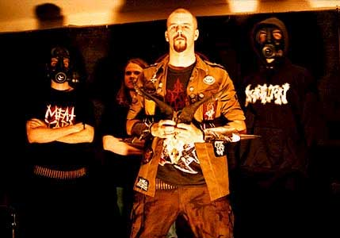
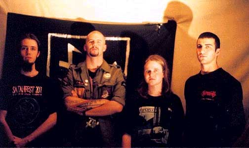
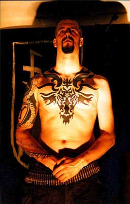

Dawn of Azazel
Данное интервью явлено по причине еще одного упоминания имени Азазеля в культуре экстремальной музыки. По причине того, что люди по-прежнему тревожат сокровенные Имена Зла ради возможности возвысить значимость своих действий.
Рассвет Азазеля (Dawn of Azazel) – таково название новозеландской death metal группы, манифестирующей уничтожение человеческой немощи во имя высшей формы существования. Rigel Walshe (бас, вокал), отвечая на наши вопросы, действительно произвел впечатление человека наделенного как интеллектом, так и физической силой. Но и такой человек должен первоначально заслужить честь возвещать рассвет Падшего Ангела. Заслужить перед Дьяволом.
А сама идея триумфа высшего человеческого существа… обречена на провал перед Его триумфом. Ибо невозможно стать сверх, оставаясь при этом на уровне.
CONTRA DEI: Азазель – имя Демона. В Темной традиции Он – Демон-Убийца, Карающий Меч Ада. По каким причинам Его имя есть в вашем названии? Имеет ли это имя какой-то особый смысл, или же вы выбрали его как одно из известных и популярных в разных источниках? Ваша жизнь как-либо связана с этим Демоном?
Rigel Walsh: Об Азазеле много написано. Он известен как Демон войны, командир адских легионов в битве страшного суда. В древнееврейской традиции Он – один из Стражей, падших ангелов, принесших людям знания. Азазель дал людям знание изготовления оружия и косметики. Азазель – мятежник, бунтарь. Он так же ассоциировался с козлом отпущения, на которого возлагались все грехи общины (истор.)
Азазель противостоит богу тем, что «обучил человека всему нечестивому на земле и открыл вечные тайны» и «вся земля была в упадке из-за деяний, которым обучил Азазель, от него весь грех».
Моя жизнь определенно связана с этими проявлениями.
CD: С именем Азазеля связаны война и убийство. За что ты воюешь, и убил бы ты кого–либо в своей борьбе?
R: Я сражаюсь за высшую форму бытия. Ради этого допустимы любые жертвы.
CD: В Америке есть группа с подобным названием (Kult Ov Azazel). Твое личное отношение к этой группе? После общения с этими людьми, мы видим, что они не имеют никакого отношения к своему названию, а лишь играют словами. Каким вы видите настоящий Культ Демона Азазеля?
R: Dawn Of Azazel образовалась в 1997 году. В то время Kult Ov Azazel были известны под именем Azazel. Я слышал некоторые их записи. Они играю достаточно тяжело и быстро, но я не услышал ничего нового и оригинального. (Порой мы не слышим ответов на некоторые наши вопросы. Ред.)
CD: В чем заключается ваш источник вдохновения? На чем основано ваше творчество и были ли влияния извне?
R: Если говорить только о музыке, то несомненное влияния на нас оказали старые death и black metal банды - Incantation, Sarcofago, Blasphemy, Immolation, Celtic Frost, Slayer, Morbid Angel, Order from Chaos. Из представителей современной сцены на нас повлияло творчество Conqueror, Deeds of Flesh, Bestial Warlust, Destroyer 666 и т.д. Что касается лирики, то это были писатели-философы, такие как: Юкио Мисима, Ницше, Рагнар Рыжебородый, Грин, Бист, Мильтон, Макиавелли, де Сад, Блейк, а также конечно мой собственный опыт интерпретации их идеалов в этом мире.
CD: Каковы твои личные цели и цели Dawn Of Azazel?
R: Я хочу распространять в мир идеи доктрины пути левой руки и создавать темную агрессивную музыку, которая должна быть также хороша, как и творчество групп, которые мне нравятся и которые оказали влияние на Dawn Of Azazel.
CD: Ваши работы говорят о насилии. Можешь ли ты четко определить свое отношение к моменту убийства? Что это значит для тебя? Можешь ли ты сказать, что этот момент может иметь и духовный аспект?
R: Наша лирика связана с насилием, как по содержанию, так и по композиции. Например, я пробую начать строку с глаголов в противоположность прилагательным или предлогам. (Это насилие? Ред.) Как человеку, который имеет какой-то опыт военной профессии, мне так же интересен и духовный аспект насилия. Как бы то ни было, я не пишу о насилии ради самого насилия. Я говорю об этом как о средстве уничтожения. Так что я бы не сказал, что написанное мной имеет какое-то отношение к убийству.
CD: Вы говорите о том, что человеческая слабость будет уничтожена. Кто или что уничтожит ее? В чем причина слабости человека? Вопрос чести: достойно ли сражаться со слабым?
R: Человеческая слабость будет уничтожена триумфом высшего человеческого существа, которому присущи дисциплина, честность, самодостаточность, харизма, гордость и любовь, которые не будут скованы собственными страхами. Слабость каждого отдельного представителя человечества обусловлена его волей, поддающейся требованиям и влиянию окружающих и собственным порокам. Нет более благородной причины бороться со всем этим, чем причина превосходства каждого и его сообщества.
CD: Ваше отношение к Темной стороне? Есть ли у вас опыт Ее познания или хотя бы интерес к этому?
R: Я крайне заинтересован в познании Темной стороны с духовных перспектив. Я верю, что истинное знание этого не может быть получено без практики. Необходимо прилагать усилия, что бы опытным путем постигнуть, как Темное реализуется в этом мире. Это знание есть истинная сатанинская мудрость, в отличие от игр в волшебство женоподобных готических гомосексуалистов, наряжающихся в мантии и балующихся с колдовской дощечкой в темной комнате при свечах.
 CD: Являетесь ли вы последователями Сатанизма? Если так, то как вы
определяете эту традицию? В некоторых ваших интервью, ты говоришь об элитизме.
Что это такое, и почему ты – элитист?
CD: Являетесь ли вы последователями Сатанизма? Если так, то как вы
определяете эту традицию? В некоторых ваших интервью, ты говоришь об элитизме.
Что это такое, и почему ты – элитист?
R: Все, что я говорил выше, может быть названо сатанинскими идеями. Тексты Dawn Of Azazel отображают эту философию в реальном мире. Они не рассказывают о демонах, потрошащих небесных ангелов, но о том, как эти понятия воплощаются, что бы усилить чью-то славу, власть, сексуальное удовлетворение и вообще все, что чье-либо сердце желает. Это не бессмысленный гедонизм, а опять же способ уничтожения – конец, который воистину раскроет природу вселенной. Я единственный в группе, у кого есть интерес к духовной составляющей Темной стороны, но я думаю, что остальные члены группы разделяют дух, который я только что обозначил. Быть элитистом для меня значит всегда бороться за то, что бы стать лучше. Стремись не только вперед, но и вверх, ибо величие есть в самом высоком. (Это один из 21 сатанинских пунктов ONA. Элитизм является одним из центральных моментов идеологии ONA Ред.)
CD: Сегодня в мире существует много организаций, распространяющих и развивающих идеи Сатанизма. Они обособлены как по степени влияния, так и по основным принципам доктрины. Следующий вопрос касается двух из них: Church Of Satan и ONA. Твое мнение по поводу идей каждой из них?
R: На мой взгляд, Сатанизм – религиозная система, которая очевидно не может существовать в какой-либо из обозначенных форм, будь то церковь или любая другая форма структуры организованной религии. Однако я ценю деятельность COS, благодаря существованию которой многие люди встали на путь левой руки. Мои личные духовные ценности и моя вера схожа с идеями ONA, но я не следую всем их доктринам буквально и непременно.
 CD: Ваше отношение к ЛаВею? Можно ли назвать его идеи сатанизмом? Многие из
тех, кто вовлечен в Сатанизм, не считают таковым большинство принципов,
утвержденных Церковью Сатаны. Называя вещи своими именами, это просто институт
эгоизма и гедонизма, а также власти за счет имени Дьявола. Твои комментарии по
этому поводу?
CD: Ваше отношение к ЛаВею? Можно ли назвать его идеи сатанизмом? Многие из
тех, кто вовлечен в Сатанизм, не считают таковым большинство принципов,
утвержденных Церковью Сатаны. Называя вещи своими именами, это просто институт
эгоизма и гедонизма, а также власти за счет имени Дьявола. Твои комментарии по
этому поводу?
R: Да, я согласен с тем, что доктрина ЛаВея ставит более жесткое ударение на гедонизм, чем следовало бы. Я думаю, у него было много блестящих идей о том, как продвинуть Сатанизм в массы людей так, чтобы они смогли это съесть и переварить. Одним словом, чтобы для них это было естественно. Как бы то ни было, гедонизм – лишь начало пути сатаниста к прозрению. Потворство – это средство очистить себя от христианской морали, в колыбели которой оказываются после рождения большинство людей на западе. Однако, посвятить свою жизнь поиску наслаждения плоти – просто стать рабом порока. Это следует превзойти, и наступит новая часть поиска, которая потребует дисциплины и жертвы некоторых из удовольствий плоти. «Пусть любовь к жизни будет целью, но пусть твоей самой высокой целью будет величие». (ONA Ред.)
CD: Вы отчуждены от человеческого мира? В какой степени вы враждебны ко всему окружающему? Кого вы считаете близкими себе?
R: Любой, кто принимает участие в музыкальной группе, выпускает альбомы и играет на живых выступлениях, очевидно, не является полным мизантропом.
Я буду более точен, если скажу, что я враждебен по отношению к девяноста процентам людей.
CD: Апокалипсис… Эта тема так или иначе близка всякому человеку. При всей индивидуальности каждого, существует единое универсальное представление о конце света, которое создано на основе библейского сюжета. По понятным причинам оно устраивает большинство человечества и является своеобразным стимулом и мотивом его поступков и образа жизни. Каково ваше видение конца времен? Что потворствует его приближению и осуществлению, и что этому противостоит?
R: Окончательная гибель нашей цивилизации неизбежна. Суть в том, что она миновала свой расцвет и находится на стадии распада.
CD: CONTRA DEI (Против бога) – само это словосочетание имеет к вам какое-то отношение? Если да, то прокомментируй свой ответ.
R: Dawn Of Azazel выступает против иудео-христианской доктрины о спасении через веру в бога – пастуха овец.
CD: В какой мере вам близок экстремизм? Это вообще необходимая черта для того, кто следует Путем Тьмы?
R: Я думаю, что необходимо быть страстным и необузданным в определенных моментах. Вот это я бы назвал «экстремизмом». Не так уж много смысла в ваших чувствах, если вы не собираетесь пытаться воплотить их в окружающем мире.
CD: Как вы пришли к Темному Пути? Почему Тьма?
R: Я иду этим путем 6 лет, с момента, когда мне было 16. Как и все то, что близко моему сердцу, я не выбирал Тьму. Таковым я стал в процессе развития.
CD: Нечеловек. Тот, кто покинул границы человеческого. Следуете ли вы этому? Как вы понимаете уничтожение человеческого?
R: Все великое в человеке должно быть не целью, но мостом. Человек это то, что должно превзойти.
CONTRA DEI: В чем заключается ваше послание этому миру? Какова основная идея Dawn of Azazel, которую вы бы хотели донести до людей?
Rigel Walsh: Человеческая слабость будет уничтожена. Справедливость это – кулак.
P.S. Группа отказалась или не сочла нужным ответить на ряд дополнительных вопросов.
| dawnofazazel@hotmail.com Dawn of Azazel Po Box 34-939 Auckland New Zealand |